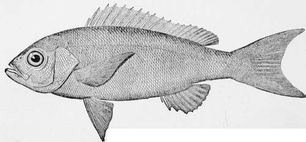

The Mangrove Snapper-Lutjanus Aurorubens (Cuv., Gill)
Description
This section is from the book "American Game Fishes", by W. A. Perry. Also available from Amazon: American Game Fishes: Their Habits, Habitat, and Peculiarities; How, When, and Where to Angle for Them.
The Mangrove Snapper-Lutjanus Aurorubens (Cuv., Gill)
Professor Jordan's description suits our South Florida fish, except as to canine, in which respect our fish resembles L. caxis, which has canines in the upper jaw. The generic name, according to Jordan and Gilbert, comes from "Lutjany," the Japanese name of some of the species which are numerous in tropical seas. I find the name "Mangrove Snapper " in Roman's list, and it is significant, as this species lives in holes among the roots of that tree. Jordan places it in the same genus with the Red Snapper, L. blackfordi, which is an ocean species of quite different habits. Like the Grouper, the Mangrove Snapper is stationary, seldom found far from its hole, in which it takes refuge when alarmed. It is one of the most shy and cunning fishes of the coast, and long casts from the boat are necessary to beguile it. It makes for the roots as soon as hooked, after the manner of the Grouper, and is a more active fighter, though perhaps not stronger, than that fish. Probably fine tackle would be more successful than the coarse hand-lines generally used, but the Snapper has very sharp teeth, and silk-worm gut would stand no chance. Cut Mullet is the bait commonly used, cast as far as possible from the boat into the deep channels near the mangroves. Let the bait rest quietly on the bottom for five or ten minutes, and as soon as the bite is felt get the fish away from the bank, or he will be lost. In form the Mangrove Snapper resembles the Small-mouthed Black Bass. Color, a reddish brown, with golden reflections. Canines long, with which it snaps savagely when captured. Eye very large and bright, with golden-colored iris. Head small, with wide mouth, well filled with teeth. Half of dorsal fin with hard spines; scales large. The large eyes seem to indicate nocturnal habits, confirmed by the fact, that the Snapper feeds more freely at night, and on dark days. The fishermen say that when placed in a car with other fish, the Snapper will mangle and devour them. The young, say of a pound weight, are often in considerable numbers in deep holes, and are taken with the cast-net. Size, in Halifax River, from half a pound to five pounds. In the Indian River they have been taken of ten pounds weight. A fish of good quality on the table, and keeps well.
Mangrove Snapper-Rhomboplites aurroubens.
Jordan And Gilbert's Description
Lutjanus aurorubcns (Cur. £r Val.). Centropistcs aurorubens (Storer). Rhomboplites aurorubens (Goode and Bean).
"Vermilion red above, rosy below; sides with oblong irregular yellow spots; dorsal and pectoral fins red; ventrals and anal lighter. Body oblong elliptical, moderately compressed, not elevated. Mouth moderate, without distinct canines. Tongue with a large oval patch of teeth, besides which are five or six smaller patches. Nostrils round, near together. Preopercle finely serrate, its notch obsolete. Gill-rakers very long and slender. Dorsal spines rather slender; second anal spine a little longer than the third; caudal fin lunate, its lobes not attenuate. Head 3^2; depth 3. D. Xii, 11; A. Ill,; Lat. I, 54. L. one foot. West Indies, north to Florida and S. Carolina."
Continue to:
- prev: The Grouper-Epinephelus Morio (Cuv. , Gill)
- Table of Contents
- next: Sheep's-Heads, Groupers, And Mangrove Snappers